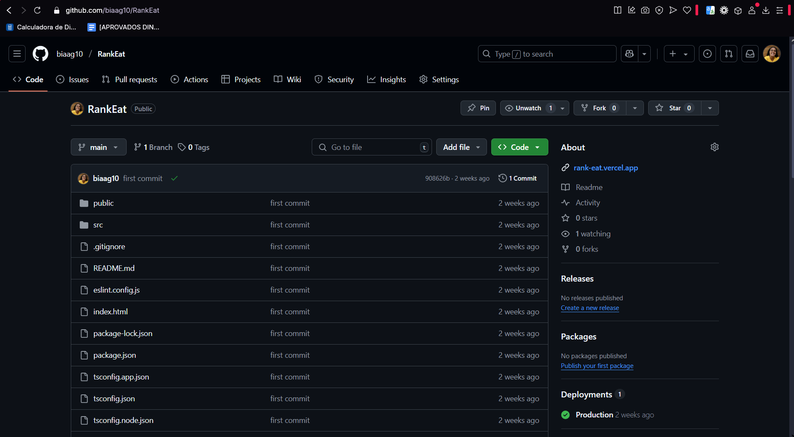
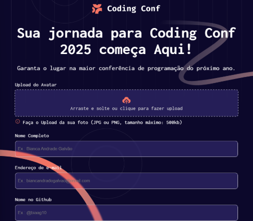
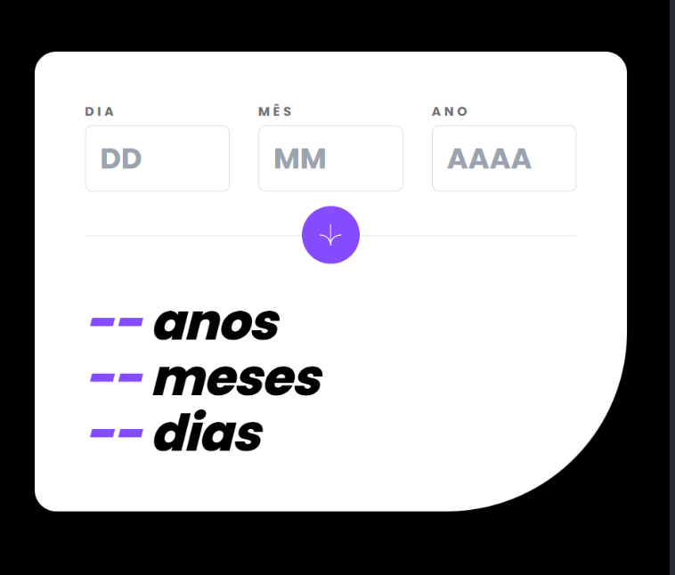
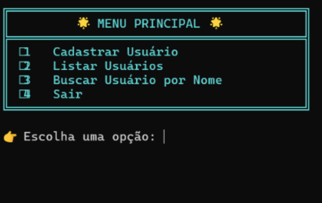
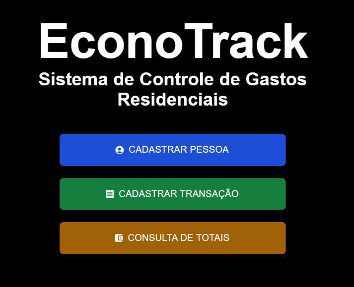

RankEat
Software de rankeamento de restaurantes de comida.
Tecnologias: React, TypeScript e Vite.
Ver no GitHub
Sou estudante do 7° semestre de Engenharia de Computação na Universidade SENAI CIMATEC, onde venho aprofundando meus conhecimentos em tecnologia e inovação. Desde o início da minha trajetória acadêmica, sempre busquei experiências que me permitissem aprender além da sala de aula, aplicando a teoria na prática e adquirindo vivência real na área.

Software de rankeamento de restaurantes de comida.
Tecnologias: React, TypeScript e Vite.
Ver no GitHub
Gerador de ticket com envio de confirmação por e-mail.
Tecnologias: HTML, CSS e JavaScript.
Ver no GitHub
Calculadora de idade (anos, meses e dias).
Tecnologias: React.js, Typescript, JavaScript e Tailwind.
Ver no GitHub
Sistema de cadastro, listagem e busca de usuários (com armazenamento local).
Tecnologias: C# .NET.
Ver no GitHub
Sistema de Gestão Financeira de uma casa.
Tecnologias: Next.js e C# .NET.
Front-End: Ver no GitHubPython com a utilização de bibliotecas como Pandas, NumPy e Matplotlib.
Aplicativo que recebe dados, por meio do bluetooth, vindos de um ESP-32, integrado a uma API de e-mail.
Desenvolvimento de um software de agendamento com Next.js,Front-End, e Nest.js, com PostgreSQL como banco de dados integrado com Prisma, Back-End. Integração com a API do Calendário do Google.
Utilização de Java para construir aplicações e programa para resolução de problemas.